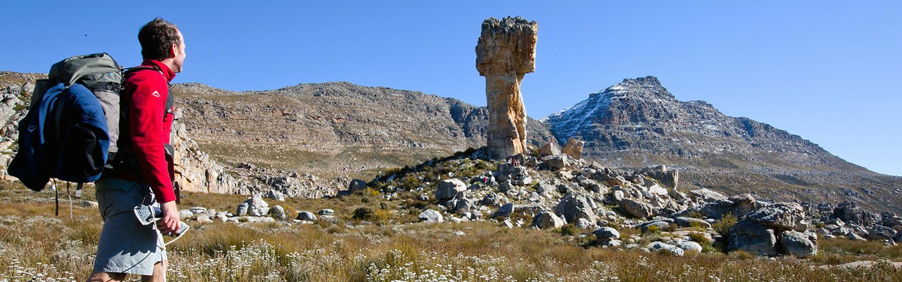

Camping
"The wilderness holds answers to questions we have not yet learned to ask."
Spend the night or the weekend camping under the stars at one of these camping spots
When the chaos of the city life gets too much, escape into the wild and stay the night or the weekend.
"The wilderness holds answers to questions we have not yet learned to ask."
Spend the night or the weekend camping under the stars at one of these camping spots
On the cusp of the Overberg, Dwarsberg Trout Hideaway lies snug on the banks of the Holsloot River, 15km south of Rawsonville. Each campsite is private, with its own stretch of lush green lawn and private ablutions. There’s trout in the river and hiking and mountain biking trails in the vicinity. For sport events that you just can’t miss, ask in advance for access to the big screen and DStv.

Sunset on the Langeberg is one of the most beautiful sights in South Africa, and Oewerzicht is a wonderful place to enjoy it. Apart from the stunning scenery, there’s also fishing and canoeing in the Riviersonderend River which gurgles right past the campground, plus hiking and mountain biking through the surrounding farmland. The ablutions are modern and first class and if you need supplies, the charming town of Greyton is just down the road.

“For hiking is one of those things that you can only do when you have the determination in you."
Here are a few hiking spots in the Western Cape
If you truly want to leave city life behind you for awhile, you will find it difficult to resist the call of the Cederberg. The reserve is only a couple of hours out of Cape Town, yet this ancient landscape will transport you to a time when humanity still roamed the wilderness, sheltering in caves by night and huddling around fires as darkness closed in. A number of trails wind their way throughout the reserve, with the Algeria Campsite serving as a hub from which hikers can explore the Cederberg at their own pace. Famous natural landmarks include the Wolfsberg Arch – a giant rock-formed archway; and the Stadsaal Caves, which contains San art dating back thousand of years.
This hike is named for the African Black Oystercatcher, a rare species of bird that dwells in the coastal regions of Southern Africa, making its nests in sandy soil, and feeding on mussels that wash up on shore. Hikers have an idea what to expect when they take part in this guided trail: long stretches of sandy coastline from which dolphins and whales can occasionally be sighted, cliffs overlooking the ocean, and a thriving biodiversity. But the journey also provides a glimpse into the region’s rich heritage, passing through villages containing classic examples of Cape Dutch architecture. In fact, the trail offers insight into the history of our entire species, as the itinerary includes a tour of the Pinnacle Point Caves, where the earliest evidence of humans crafting tools, drawing symbols and catching fish have been discovered.
“The climb might be tough and challenging, but the view is worth it. There is a purpose for that pain;you just can't always see it right away."
Here are a few climbing spots in the Western Cape
Krakadouw is an imposing venue in the remote northern Cederberg that it is on the hit list of every hard-core trad climber. The long, somewhat intimidating routes are on impressive amphitheatres on the southern and western sides of the Groot Krakadouw peak. There are some fun single pitch routes on middle Krakadouw. There is nothing easy here and all the routes are pretty solid in their grades, so to really have fun at Krakadouw you need to be climbing consistently and well at about grade 21.
Those in search of a the best sport climbing spots in the Western Cape will be far from disappointed with Montagu and Oudtshoorn. Montagu is a fantastic tourist destination. Surrounded by vineyards, orchids, and natural springs, the unique rock formations make it one of the most desirable climbing destinations in the Cape region. With over three hundred bolted routes at all grades, Montagu offers endless excitement for both trad and sport climbers. And no more than a month has passed since the 2008 Montagu Rock Rally, meaning freshly chalked routes and flattened trails.
“Many men go fishing all of their lives without knowing that it is not the fish they are after."
Here are a few fishing spots in the Western Cape
Betty’s Bay has numerous surf and rock fishing spots along the coastline. Dive to the parking area at Tom se Klip (Silversands Beach) and walk down to the coast. Dawidskraal, Tom’s se Klip, Silwerstrand Beach and Jock se Baai. Wonder worm is the best bait in this area, and you can expect to catch geelbek, kob, steenbras, belman and galjoen. Mussel is good bait too. If you want to go for sharkies, there are plenty of spotties, smoothies and the odd cow shark around.
In June anglers come from all over for the snoek which is caught at the harbour. For Palmiet beach, turn towards the parking site on the road to the Caravan Park. Here you can try for galjoen and steenbras in front of the caravan park and the river mouth, using prawn and mussel. Fly fish for small leeries on the vlei. For beach fishing, walk along the Main Beach to the High Dune; fish from the rocks along the shoreline at Sandown Bay, you may get the odd galjoen in season. You could also find sharks (vaalies) about a 1km down the Main Beach, but you will need a very good cast to get to them. The rocks in front of Main Beach are good for galjoen, further along the beach the surf yields streenbras and cob/kabeljou. In November, Cape salmon can be caught from the beach.
“Hunting is not a sport. In a sport, both sides should know they're in the game."
Here are a few hunting spots in the Western Cape. Please be responsible when hunting.
Lasarus Game Farms have more than 35 animal species that can be hunted, either with bow hunting or rifle hunting. You can choose between our plains game package or the big five package. Bird hunting is allowed with shotguns, black powder and hand guns are also allowed.
Zoetvlei has a variety of game available for hunting. Our friendly and professional staff will ensure you have an excellent experience. The farm is fully enclosed with game fencing and hunting can be done all year-round.The varying nature of Karoo broken veld makes it excellent hunting terrain for the hunter on foot.You can also make use of our butchery and cooling facilities.Hunting variety and prices on request.

“Be shore of yourself, come out of your shell and make waves."
Here are a few canoeing spots in the Western Cape.
Cape Town's natural beauty is world renowned, however, few have experienced its sights and sounds from the fresh blue waters of the Atlantic Ocean. Set your senses free on our 2 hour Sea Kayak Tour and explore the incredible ocean wildlife, stunning shoreline and the exhilarating movement of the ocean. Your outlook of Cape Town will be positively changed forever.
Eden Adventures runs outdoor activities in the Wilderness area. We specialise in Canoe Hire, abseiling, and kloofing (canyoning). We also run teambuilding events on the Garden Route.